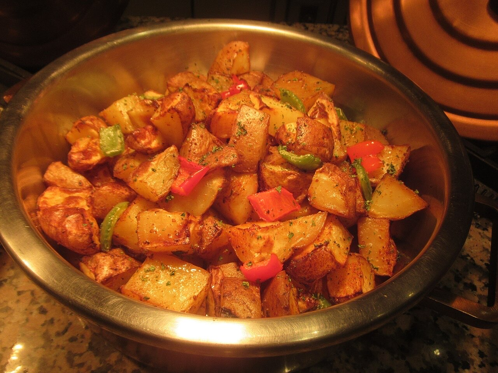
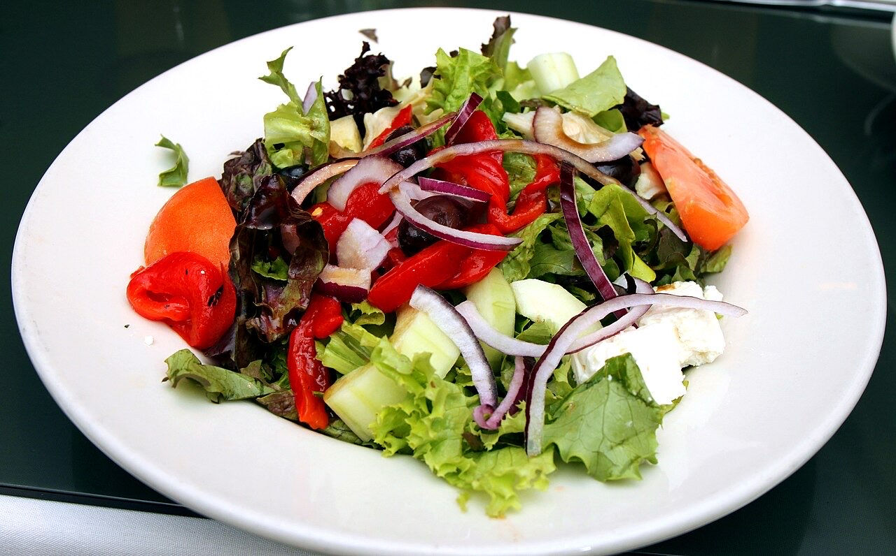

Fotografias ilustrativas — no site final usamos as vossas.
Comida para levar · Pinheiro
Leitão assado para a mesa de família
Para a mesa de domingo ou para a festa lá de casa.
Combine a encomenda e passe a recolher.
4,6★ em 212 avaliações no Google.
Os Leitões do Tomaz ficam na Rua da Devesa, no Pinheiro, em Guimarães, e preparam leitão assado para levar. Encomende por WhatsApp e passe a recolher.


Fotografias ilustrativas — no site final usamos as vossas.
Encomenda
Diga o que precisa e quando quer levantar (ou receber). Respondemos por WhatsApp.
↑ Assim chegaria a mensagem ao vosso WhatsApp. (Nesta demonstração nada é enviado.)
Onde estamos
Proposta para Leitões do Tomaz
Esta página foi feita de propósito para Leitões do Tomaz por João Machado, programador web aqui de Guimarães. Inclui:
Eu trato do alojamento e da manutenção. Sem compromisso.